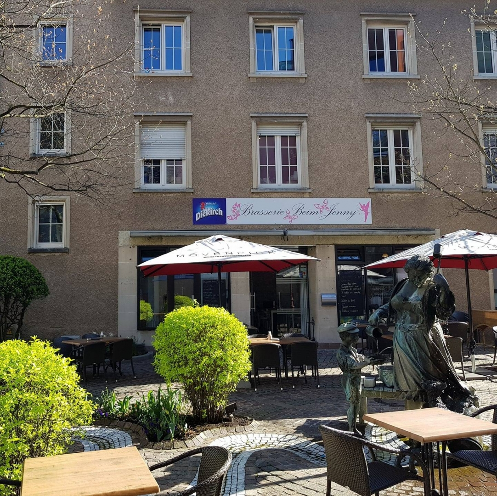
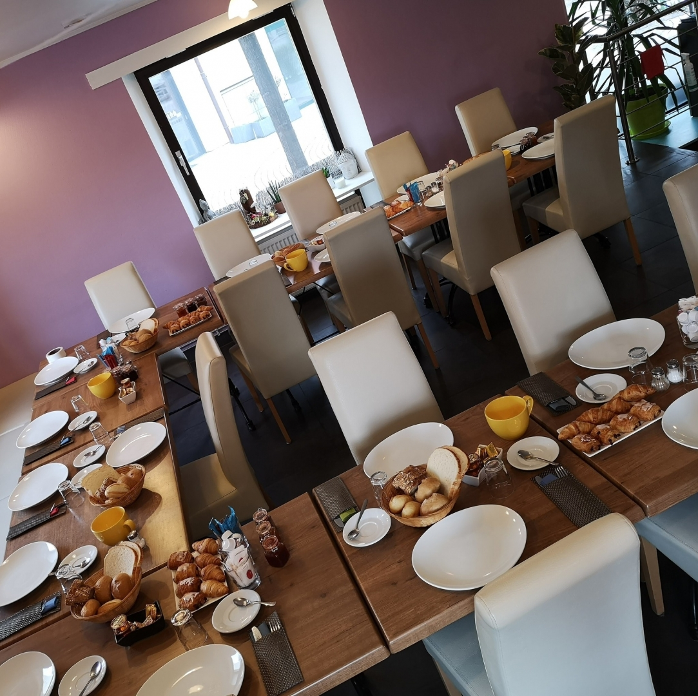

Tartinades maison
Trio de tartinades faites maison — guacamole, betterave, tomate — et baguette toastée.
Prix à confirmerChez Jenny, à Ettelbruck : la cuisine maison et la plus jolie terrasse de la ville.
Une adresse familiale sur la Place de la Résistance, autour de la fontaine de la marchande de beurre. Généreux, convivial, sans chichis.


Ici, on cuisine tout maison et on accueille chacun comme à la maison. On y vient pour la Salade Mozza, pour un Cordon Bleu, pour un verre de Pinot Gris sur la Place — et on repart avec l'envie de revenir.
Une carte de brasserie franche et généreuse, entre spécialités maison et incontournables. Plats et tarifs à confirmer avec l'établissement.
Carte indicative reconstituée d'après les avis et les listings publics. Tous les plats, disponibilités et tarifs sont à confirmer avec l'établissement.
La Brasserie Beim Jenny occupe l'angle de la Place de la Résistance, en plein cœur d'Ettelbruck — la ville principale du nord du Luxembourg.
La terrasse s'étend sous les parasols rouge et blanc, sur les pavés, tout autour de la fontaine de bronze du quartier.
⚑ Horaires susceptibles de varier — merci de confirmer les heures de service auprès de la brasserie avant votre visite.